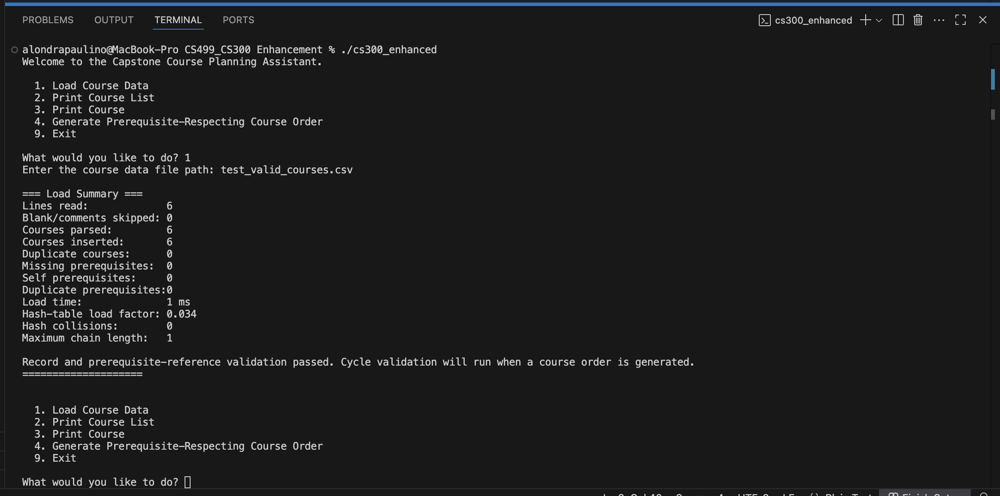
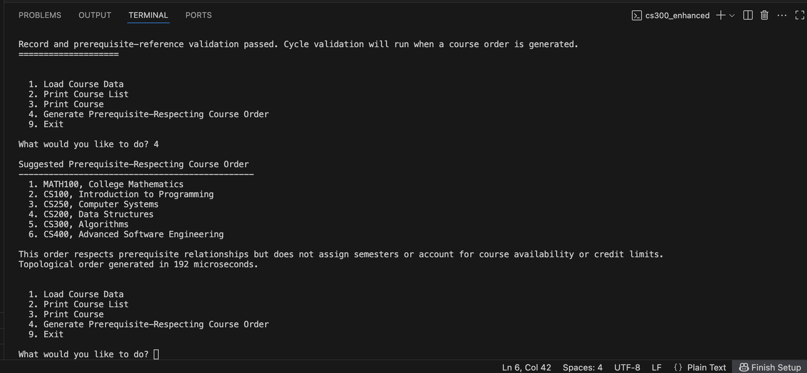
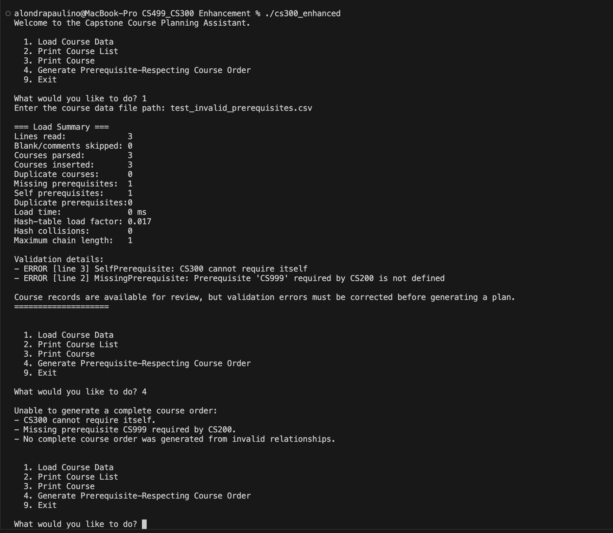

Implementation and Testing Evidence
These screenshots are the submitted evidence from the enhancement work. Select an image to view it at full size.







CS 499 Computer Science Capstone
Algorithms and Data Structures
These screenshots are the submitted evidence from the enhancement work. Select an image to view it at full size.


